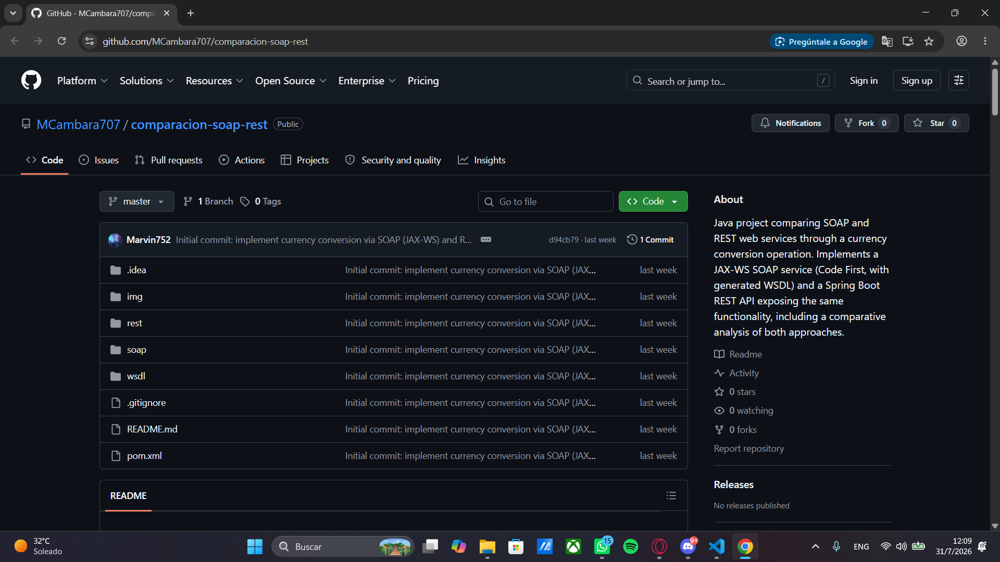
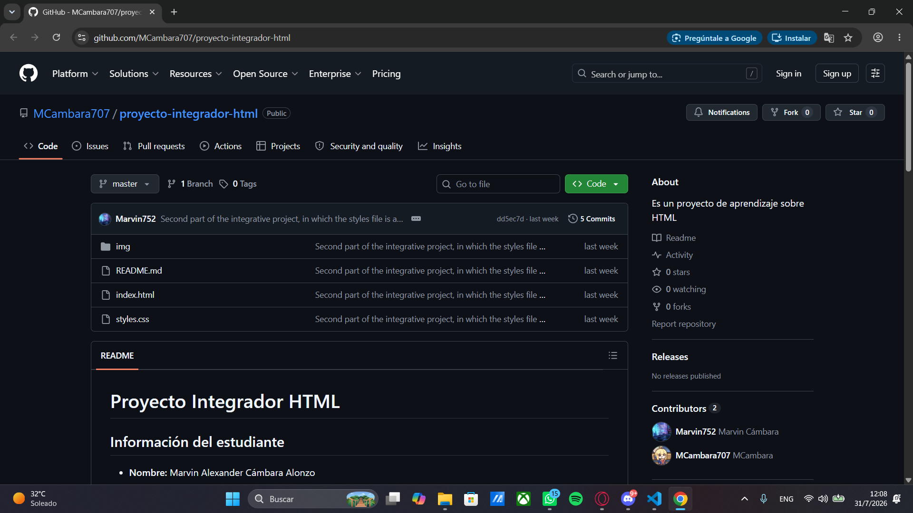
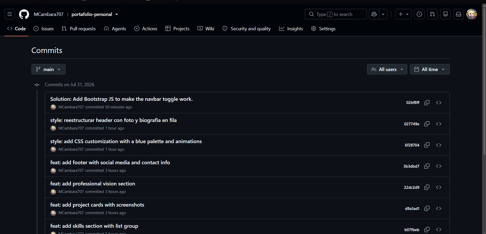

Biografía
Soy estudiante de Ingeniería en Sistemas de Informacion y Ciencias de la Computación, apasionado por la tecnología, el desarrollo de software y el aprendizaje continuo. Me gusta adquirir nuevos conocimientos, resolver problemas mediante la programación y mejorar mis habilidades para crecer tanto personal como profesionalmente. Busco desarrollar proyectos que me permitan aplicar lo aprendido y seguir ampliando mi experiencia en el área de la informática.
Habilidades e Intereses
Habilidades
- Programación en Java y C#.
- Desarrollo Backend con Spring Boot.
- Bases de datos MySQL y SQL Server.
- SQL (DDL, DML y DCL).
- Resolución de problemas y pensamiento lógico.
Intereses
- Desarrollo de aplicaciones de escritorio y web.
- Programación orientada a objetos.
- Diseño y administración de bases de datos.
- Aprender nuevas tecnologías y frameworks.
- Desarrollo de software de alta calidad.
Proyectos

Comparación SOAP vs REST
Proyecto en Java que compara implementaciones SOAP (JAX-WS) y REST (Spring Boot) de un conversor de moneda.
Ver en GitHub
Proyecto Integrador HTML/CSS
Sitio web responsive aplicando Grid, Flexbox, variables CSS, metodología BEM y diseño mobile-first.
Ver en GitHub
Portafolio Personal
Este mismo sitio: página de presentación personal construida con HTML5 semántico y Bootstrap 5.
Estás aquíVisión Profesional
Mi visión profesional es desarrollarme como un ingeniero en sistemas especializado en el desarrollo de aplicaciones, creando soluciones tecnológicas innovadoras, eficientes y de calidad. Aspiro a fortalecer continuamente mis conocimientos en programación, bases de datos, desarrollo de software y tecnologías emergentes, con el objetivo de contribuir a proyectos que generen un impacto positivo y me permitan crecer tanto personal como profesionalmente.